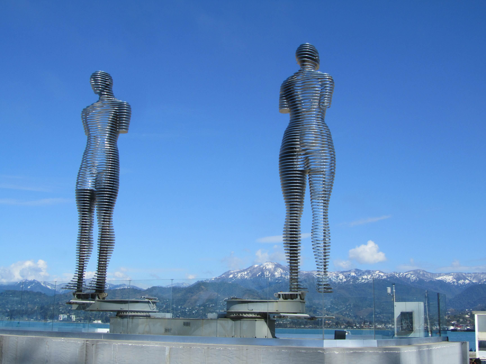

ТБИЛИСИ, ВОЕННО-ГРУЗИНСКАЯ ДОРОГА, АХАЛЦИХЕ, БАТУМИ
Первые шесть дней второго маршрута по Грузии идентичны первым шести дням первого маршрута и посвящены Тбилиси, Кахетии и Военно-грузинской дороге — их описание можно прочитать здесь
День 1-6: Тбилиси, Военно-грузинская дорога и Кахетия.
Отличия начинаются с 7-го дня:
День 7: Переезд из Тбилиси в Ахалцихе. По дороге смотрим Боржоми и Бакуриани
День 8: Ахалцихе, крепость Рабат и пещерный город Вардзия
День 9: Переезд в Батуми
День 10-13: Отдых на море в Грузии
День 14: Возвращение в Тбилиси
ДЕНЬ 7: ПЕРЕЕЗД ИЗ ТБИЛИСИ В АХАЛЦИХЕ
По дороге смотрим Боржоми и Бакуриани.
Боржоми — горный бальнеологический курорт, чья слава «гремела» по всему бывшему Союзу. Боржоми — это огромный красивый парк, река Боржомула, минералка и варенье из сосновых шишек.
Бакуриани — лучший (имхо) горнолыжный курорт Грузии. Кроме отличного катания, в Бакуриани есть уникальная узкоколейная железная дорога, на ее «игрушечном» поезде можно доехать до Боржоми и обратно.
ДЕНЬ 8: АХАЛЦИХЕ
Самое интересное в Ахалцихе и окрестностях — это крепость Рабат и поездка в пещерный город Вардзия. На одну-две ночи в Ахалцихе я могу порекомендовать замечательный отель 3D с идеальным расположением: напротив автостанции, до крепости Рабат минут 5-7 пешком, рейтинг 9.1, цена 25$ в сутки.
Рабат — это древняя турецкая крепость, недавно подвергшаяся реставрации, что привело к неоднозначным результатам.
По мнению многих, впечатление такое, что крепость не отреставрировали, а тупо снесли и построили заново — настолько «глянцевой» и новодельной она выглядит. Предлагаю туда заехать и сделать себе свое мнение.
Пещерный город Вардзия — несомненно, главная достопримечательность Самцхе-Джавахетии.
Огромный тайный пещерный город и монастырь, который был «обнаружен» лишь когда в результате землетрясения обрушилась часть скалы.
ДЕНЬ 9: ПЕРЕЕЗД В БАТУМИ
Если на дворе лето и у нас хороший внедорожник, от Ахалцихе до Батуми можно добраться по кратчайшему пути — по горной Трансаджарской трассе. Минус: дорога грунтовая и местами откровенно «убитая». Плюс: потрясающие пейзажи и возможность увидеть достопримечательности горной Аджарии: Годердзи, горные курорты Бахмаро и Бешуми, водопад и арочный мост в Махунцети и многое другое.
ДЕНЬ 10-13: ОТДЫХ НА МОРЕ В ГРУЗИИ
Батуми — это древний город и одновременно суперсовременный грузинский морской курорт с огромным галечным пляжем. С каждым городом в аджарскую столицу приезжает все больше людей и, несмотря на масштабное строительство, хорошее жилье разбираются за несколько месяцев до начала курортного сезона.
Пляж Батуми — это несколько километров крупной гальки, купаться лучше в специальных тапочках. Волны обычно небольшие, глубина начинается достаточно быстро, пляж не мелководный. Для отдыха на море в Грузию лучше ехать с середины июня по конец сентября.
Кроме Батуми, в Аджарии есть еще несколько хороших мест для пляжного отдыха: Квариати, Гонио, Сарпи, Кобулети, Уреки… Отдых в этих поселках подойдет семьям с детьми или тем, кто хочет отдохнуть подальше от толп и тусовок.